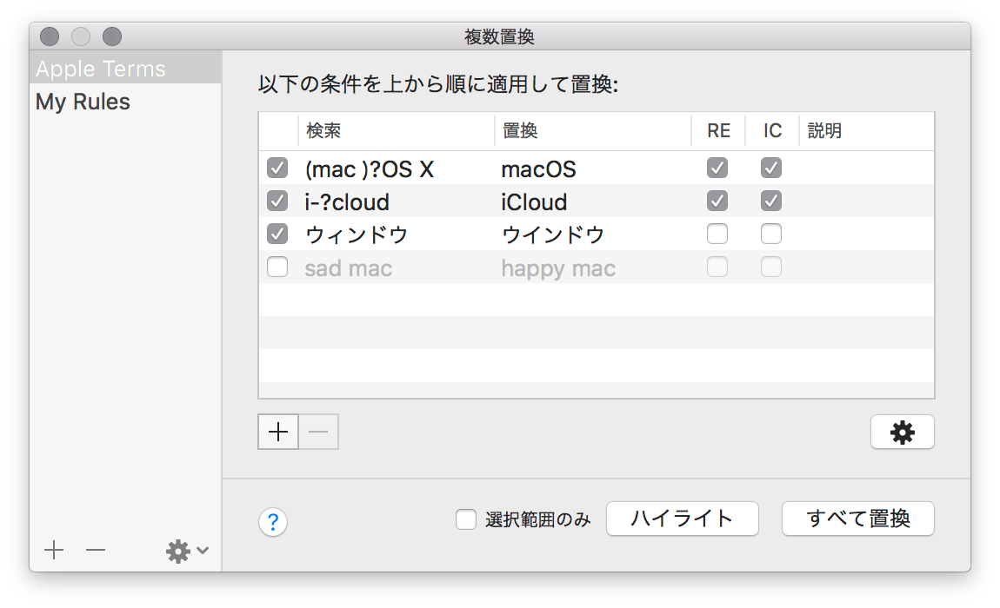

複数置換機能を使うと、複数の置換を一度に連続して実行できます。この置換条件は任意の名前で保存することができ、好きなときに呼び出して再利用できます。
複数置換ウインドウで、置換定義を作成したり、その定義を実行できます。

作成した置換定義は左側のリストに一覧表示されます。
作成した置換定義を他のコンピュータで使用するために、定義を書き出すことができます。置換定義1つあたり1つの置換定義ファイルが作成されます。定義ファイルは.cotrpl拡張子を持ちJSON形式で記述されています。
左側のリストで選択された置換定義の内容が、右側の編集エリアに表示されます。実行すると、編集エリアの置換条件が上から順に適用されます。
置換定義を実行するには、編集エリア下部にあるボタンを使用します。
* 「すべて置換」では、上位の置換条件を適用し変更が加えられた書類内容に対して次の条件を適用していくため、「ハイライト」コマンドの結果は実際に「すべて置換」を実行したときの置換対象と異なる場合があることに留意してください。
複数置換をおこなう置換定義を作成できます。
定義の保存は随時自動で行われるため、変更後に明示的に保存をする必要がありません。
無効な置換条件は置換実行時にスキップされます。
| オプション | 解説 |
|---|---|
| (チェックボックス) | このチェックボックスがオフの行は置換実行時にスキップされます。このオプションは置換定義を保持したまま一時的に条件を無効にしたいときに利用できます。 |
| 検索文字列 | 置換する文字列です。この項目は必須です。この欄が空欄の場合、無効な定義としてこの行は無視されます。 |
| 置換文字列 | マッチした文字列を置き換える文字列です。この欄が空欄の場合は、マッチした文字列が削除されます。 |
| RE | 正規表現を使って検索をします。（Regular Expressionの略） |
| IC | 大文字／小文字を区別せずに検索します。（Ignore Caseの略） |
| 説明 | 登録する語句にメモがある場合はこの欄を使用できます。この項目は置換には影響せず、空でも構いません。 |
詳細オプション画面からより細かな検索の振る舞いを設定できます。ここでの設定は置換定義に保存され、同一置換定義内のすべての置換条件に適用されます。詳細オプション画面は複数置換ウインドウの編集エリア下部のギアボタンをクリックすると開きます。
オプションの各項目については検索と置換を参照してください。